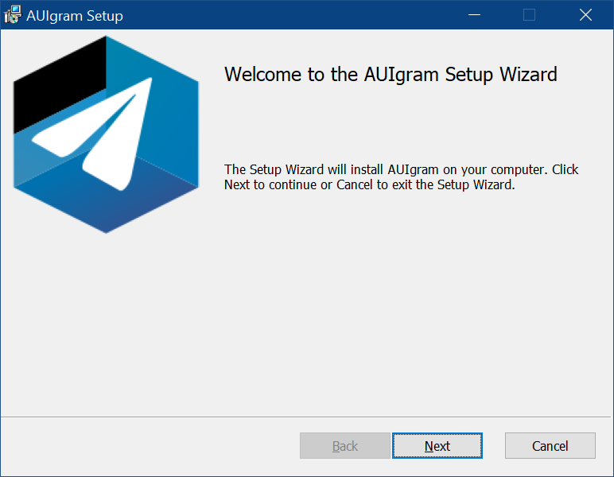
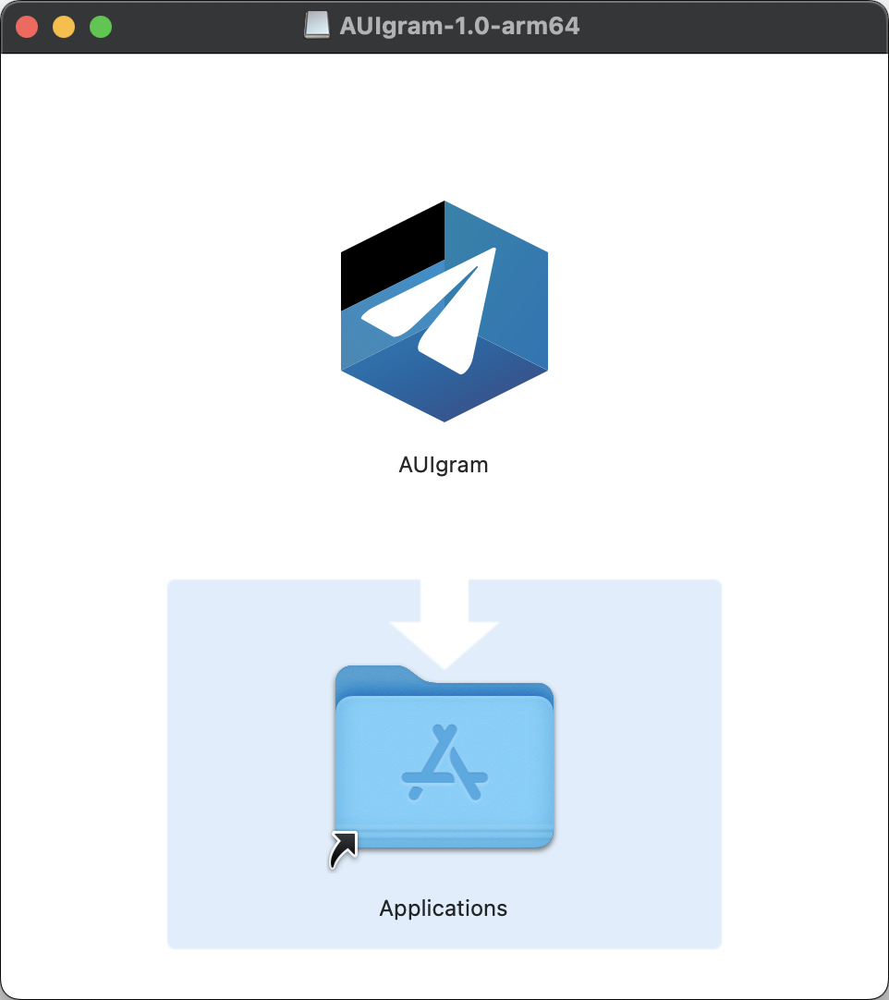

App Packaging#
Cross-platform app packaging is a large topic that involves various build systems, platform-specific tools and
techniques. AUI unifies package building process while still relying on CMake as the central build system.
AUI Framework focuses on minimizing efforts for AUI-based project to produce production-ready packages as easily as possible. AUI refrains from self-promotion in placeholders and "default values"; instead it carefully uses the information about your project passed to aui_app where needed.
AUI provides a convenient configure time variable for choosing target packaging method -
AUI_APP_PACKAGING "-DAUI_APP_PACKAGING=...". Furthermore, if you are using AUI_BUILD_FOR "-DAUI_BUILD_FOR=..."
(for cross-compiling), AUI_APP_PACKAGING is not required to specify. This page
provides full usage examples.
AUI_APP_PACKAGING and AUI_BUILD_FOR are handled by aui_app.
aui_app is a CMake command provided by AUI that defines platform-specific technical information about your application:
- Display name
- Icon
- Vendor (author) information
- Version
- Package id (if required by target platform)
- etc...
In addition, this command populates some CPACK_* variables (if undefined). This approach allows you not to bother
about various installation methods but also override the variables if needed by simply calling set on them, no matter
prior to or after aui_app invocation.
These adjustments are needed to configure the installer packages. AUI replaces installers' defaults with the information
passed to aui_app, such as app name, id, icon, license information, authors, etc. to produce production-ready packages
out of the box.
This guide covers various packaging techniques for all supported platforms.
Note
This guide assumes you have already called aui_app inside your CMakeLists.txt.
Windows#
Historically, Windows has been associated with installers in the form of executable files (exes) and Windows Installer
files (msis), often downloaded from the internet. This method can be considered unsecure.
Although Windows offers its official store and numerous unofficial repositories for distributing software, many developers still opt for traditional methods. This guide will cover the latter.
Note
Guides about packaging for Windows assume you are running Windows with Chocolatey preinstalled. This way the process is easily reproducible (i.e., on a CI/CD runner).
Inno Setup#

Inno Setup is a free installer framework for Windows program by Jordan Russell and Martijn Laan.
# install requirements
choco install innosetup
# standard CMake build process
mkdir build
cd build
cmake .. -DCMAKE_BUILD_TYPE=Release -DAUI_APP_PACKAGING=INNOSETUP
cmake --build . --config Release
# packaging
cpack . -c Release -B artifacts
# publishing
gh release upload ${{ github.ref }} artifacts/*.*
The script above produces a file artifacts/<APP_NAME>-VERSION-windows-ARCH-setup.exe, where <APP_NAME> is the NAME
arg of aui_app (unless not overridden by CPACK_PACKAGE_FILE_NAME).
aui_app populates the following INNOSETUP-related variables (only if they haven't been defined already):
CPACK_INNOSETUP_ICON_FILE=${_ico}(installer icon)CPACK_INNOSETUP_IGNORE_LICENSE_PAGE=ON(skips license page)CPACK_INNOSETUP_IGNORE_README_PAGE=ON(skips README page)CPACK_INNOSETUP_INSTALL_ROOT="{localappdata}"(installs To AppData\Local)CPACK_INNOSETUP_PROGRAM_MENU_FOLDER="."(omits Start menu folder)CPACK_INNOSETUP_RUN_EXECUTABLES=${_executable}(runs the program after installation)CPACK_INNOSETUP_SETUP_PrivilegesRequired="lowest"(hence we're installing to user dir, we don't need UAC)CPACK_INNOSETUP_SETUP_UninstallDisplayIcon="{app}\\\\\\\\bin\\\\\\\\${_executable}.exe"(displays app icon in Control Panel/Settings)CPACK_INNOSETUP_SETUP_WizardSmallImageFile=${_ico}(small icon inside INNOSETUP window)CPACK_PACKAGE_ICON=${_ico}(app icon inside INNOSETUP window)_aui_package_file_name=${_aui_package_file_name}-setup(append -setup suffix for INNOSETUP)
aui_app generates some image assets for the installer from your icon.
By default, in addition to branding adjustments (such as app logo and name), AUI configures INNOSETUP so the installer won't prompt a UAC dialog (leverage to admin privileges). This way the installation process is more secure from perspective of the end user. Moreover, installation to user's directory allows updater to work without prompting leverage to admin privileges during update installation.
AUI_PORTABLE_ZIP, AUI_PORTABLE_TGZ#
Note
This packaging method is AUI-specific and provided by aui_app via AUI_APP_PACKAGING.
This packaging method creates an *.zip or *.tar.gz archive with your application "preinstalled". After
unpacking, no extra actions are needed. The user can launch executable of your application directly.
Note
updater requires ZIP portable to be published. Other archive formats such tar tar.gz are not supported.
# standard CMake build process
mkdir build
cd build
cmake .. -DCMAKE_BUILD_TYPE=Release -DAUI_APP_PACKAGING=AUI_PORTABLE_ZIP
cmake --build . --config Release
# packaging
cpack . -c Release -B artifacts
# publishing
gh release upload ${{ github.ref }} artifacts/*.*
AUI_PORTABLE_ZIP appends -portable suffix to archive file name, if not overridden by CPACK_PACKAGE_FILE_NAME.
WIX#

WIX is the installer framework that produces msi packages.
Note
updater requires application to be installed in user's directory and thus AUI's autoupdating functionality can't be used with WIX.
# install requirements
choco install wixtoolset
# standard CMake build process
mkdir build
cd build
cmake .. -DCMAKE_BUILD_TYPE=Release -DAUI_APP_PACKAGING=WIX
cmake --build . --config Release
# packaging
cpack . -c Release -B artifacts
# publishing
gh release upload ${{ github.ref }} artifacts/*.*
The script above produces a file artifacts/<APP_NAME>-VERSION-windows-ARCH.msi, where <APP_NAME> is the NAME arg
of aui_app (unless not overridden by CPACK_PACKAGE_FILE_NAME).
aui_app populates the following WIX-related variables (only if they haven't been defined already):
CPACK_WIX_PRODUCT_ICON=${_ico}(displays app icon in Control Panel/Settings)CPACK_WIX_PROGRAM_MENU_FOLDER="."(omits Start menu folder)CPACK_WIX_UI_BANNER=${_ico}(image at top of all installer pages)CPACK_WIX_UI_DIALOG=${_ico}(background image used on the welcome and completion dialogs)
aui_app generates some image assets for the installer from your icon.

macOS#
Note
Guides about packaging for macOS assume you are running macOS with Xcode preinstalled.
The simplest and the most user-friendly installation method is DragNDrop which you are probably looking for.
DragNDrop#
The DragNDrop CPack generator creates a DMG image. When opened, a Finder window appears with your application and a
symlink to /Applications, effectively prompting the user to copy the application from the medium to his app library.
This packaging method for macOS covers non-install (portable) use case as well. If one chooses to keep your application
not in /Applications but in some other place they can do that intuitively by copying your application from DMG image
to whatever place they want.
Default DMG image produced by CPack is sparse: it's just a regular Finder window with sidebar and top bar showing your application bundle and a symlink. aui_app configures CPack to rearrange icons and place a background image so no extra configuration by an AUI-based project is needed:

# standard CMake build process
mkdir build
cd build
cmake .. -DCMAKE_BUILD_TYPE=Release -DAUI_APP_PACKAGING=DragNDrop
cmake --build . --config Release
# packaging
cpack . -c Release -B artifacts
# publishing
gh release upload ${{ github.ref }} artifacts/*.*
The script above produces a file artifacts/<APP_NAME>-VERSION-macos-ARCH.dmg, where <APP_NAME> is the NAME arg of
aui_app (unless not overridden by CPACK_PACKAGE_FILE_NAME).
aui_app populates the following DMG-related variables (only if they haven't been defined already):
CPACK_DMG_BACKGROUND_IMAGE=${_current_app_build_files}/dmg_background.png(sets the default DMG background)CPACK_DMG_DS_STORE_SETUP_SCRIPT=${_current_app_build_files}/dmg_ds_store_setup.scpt(rearranges icons in DMG)
Android and iOS#
-DAUI_BUILD_FOR=... implies AUI_APP_PACKAGING, no further configuration is needed.
Please refer to cross-compiling.